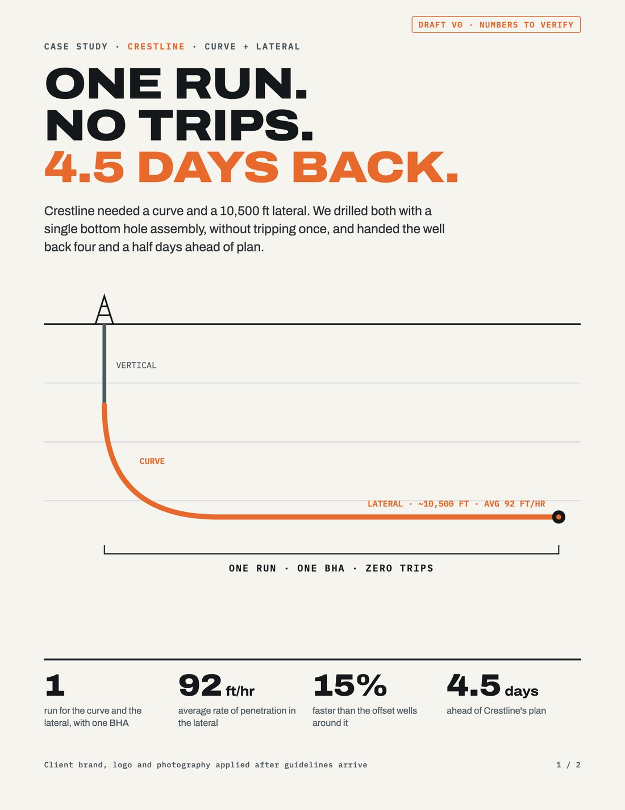
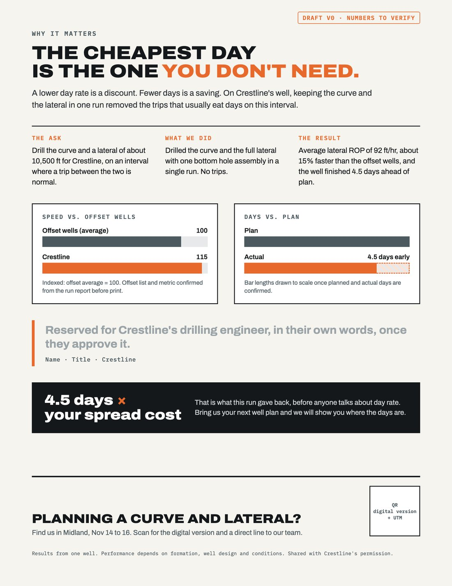

What I heard
Megan's note was quick and a little scattered, which is normal for a busy client. These are the moments that change the work. The red ones are the easiest to miss and the most expensive to get wrong.
Best run data they've had. Sales keeps mentioning it but has nothing to hand anyone.
Curve and lateral in one run, one BHA, no trips. Lateral about 10,500 ft at 92 ft/hr average. About 15% faster than offsets.
"Six" is Reeves County. Crestline is 4.5 days ahead of plan. Only 4.5 goes anywhere near this piece.
"Don't do anything with that." It goes in the recap as parked, and we don't act on it.
A handout for the conference, "not a flimsy brochure". Photos might exist; she'd have to ask around.
Conference is the 14th to 16th in Midland, but the printer needs five business days. Files are due the 9th.
Bigger directional companies are cutting day rates. Sales is getting beaten on price. This shapes the message.
Refresh the one-pagers for the other three service lines. Small, but it needs its own timeline.
Recap email
Sent the same day as the voice note. Megan is travelling tomorrow, so it's built to be read on a phone: decisions and asks first, details after. I'd also text her the three urgent asks, since she said that's the best way to reach her.
Hi Megan,
Thanks for the voice note. Here's what we heard, the plan, and what we need from you. Short version: one printed Crestline case study for Midland, with files at the printer by Monday, Nov 9. We're aiming for Friday, Nov 6 to leave a day of buffer.
What you asked for
- A printed Crestline case study to hand out at the Midland conference (Nov 14 to 16). Heavy and well made, not a flimsy brochure.
- A refresh of the one-pagers for your other three service lines.
The Crestline story, as we understood it
- Curve and lateral drilled in one run, with one BHA and no trips
- Lateral of about 10,500 ft, averaging 92 ft/hr
- About 15% faster than the offset wells
- About 4.5 days ahead of plan (the 6 days is the Reeves County well, so we'll keep that out)
- Crestline's drilling engineer said on the call that it saved them real money
We'll check every number against the run report before anything goes to print.
How we'll frame it
Since the bigger directional companies are cutting day rates, the piece will lead with days saved, not day rate. A lower day rate is a discount. Four and a half fewer days is a real saving. That gives your sales team something to say when price comes up.
Key dates
| Wed, Nov 4 | First draft (copy and layout) to you |
| Thu, Nov 5 | Your feedback, one round, by noon |
| Fri, Nov 6 | Your final OK, files to the printer |
| Mon, Nov 9 | Printer's hard deadline (our backup day) |
| Tue, Nov 10 | Digital version to your sales team |
| Fri, Nov 13 | Printed copies delivered in Midland |
What we need from you
- By Mon, Nov 2: Crestline's OK to use their name, logo and data. If they need more time or say no, we'll build an "a Permian operator" version so the date doesn't move.
- By Mon, Nov 2: the run report for the well, including the offset wells behind the 15%.
- By Tue, Nov 3: the drilling engineer's name and title, and whether they're OK being quoted.
- By Tue, Nov 3: any photos from the pad. If none turn up, the design works without them, so nothing waits on photos.
- By Wed, Nov 4: printer contact, how many copies, and where to ship in Midland (booth number or venue).
One quick question
Do you need the refreshed one-pagers at the conference too? If yes, they also have to make the Nov 9 deadline. If not, we'll start them the week after Midland, when there's room to do them well.
Parked
The idea of a case study for every strong well. No action from us; it's yours for the next-quarter conversation.
Safe travels tomorrow. I'll text you the first three asks so they're easy to answer on the road.
Thanks,
Durva
Execution plan
Working back from the printer, not the conference. There are six working days between kickoff and the printer deadline, so the plan protects the two things that can't be rushed: Crestline's approval and the number check.
| Workstream | Mon 2 | Tue 3 | Wed 4 | Thu 5 | Fri 6 | wknd | Mon 9 | Tue 10 | Wed 11 | Thu 12 | Fri 13 | Sat 14 to Mon 16 | Wed 18 |
|---|---|---|---|---|---|---|---|---|---|---|---|---|---|
| Inputs + approvals | |||||||||||||
| Copy + design | |||||||||||||
| Print + shipping | |||||||||||||
| Sales kit (digital) | |||||||||||||
| Conference | |||||||||||||
| One-pagers (phase 2) |
Day by day
- Recap email out; text Megan the three urgent asks Midnight
- Megan asks Crestline for permission (name, logo, data, quote) Megan
- Internal kickoff: brief to copywriter and designer, pull brand files and current one-pagers Midnight
- Send the printer specs and ask for a quote, stock availability, and whether five days includes delivery Printer
- Check every number against the run report, including which offsets make up the 15% Midnight
- Copy v1 and layout direction. Photo decision by end of day: real photos if they're print quality, otherwise the well-path graphic Midnight
- Start the anonymized "Permian operator" version in parallel, so Crestline's answer can't stall us Midnight
- v1 PDF to Megan with a short note on what to look at (numbers, quote, tone) Midnight
- Lock paper stock, quantity, quote and ship-to address with the printer Printer
- One consolidated round of feedback from Megan by noon Megan
- Crestline go/no-go by end of day. No answer means we print the anonymized version Megan
- v2 with changes in, internal proofread by someone who hasn't seen it yet Midnight
- Final OK from Megan by 2 PM Megan
- Preflight: 0.125" bleed, CMYK, 300 dpi images, fonts embedded, QR tested on two phones Midnight
- Files to the printer. Quick audit note on the three one-pagers: what looks dated and what needs new info Midnight
- Backup day if anything slipped. Approve the printer's digital proof the same day Midnight
- Digital PDF and the QR landing page go live Midnight
- Digital case study, a short talk track for price questions, and an email template to the sales team Midnight
- Optional: a "find us in Midland" LinkedIn post for Megan's company page Midnight
- Check on the print run Wednesday; get tracking Thursday; confirm delivery in Midland Friday Printer
- Backup plan: someone travelling to Midland carries one box of copies Megan
- Copies at the booth; QR scans tracked through UTM tags Megan
- Short report: copies handed out, QR scans, meetings booked, and what sales heard at the booth Midnight
- Start the one-pager refresh, done in about two weeks with one review round Midnight
Risks and what we'd do
| Risk | Plan |
|---|---|
| Crestline is slow or says no | Anonymized "Permian operator" version runs in parallel from Tuesday. Same design, swap one line. |
| Numbers in the run report don't match the call | Print only what the report confirms. Flag any difference to Megan in writing before the draft. |
| No usable photos | The design is built around a well-path graphic, so photos are a bonus, not a dependency. |
| Heavy stock or special finish adds days | Pick a stock the printer has in house by Wednesday. Skip finishes that add time. |
| Shipping misses Friday | Ship to the venue or hotel with tracking. Someone travelling carries a box as backup. The QR and the digital PDF still work at the booth. |
| Megan can't review while travelling | Name a backup approver on Monday. Keep the review to one clear PDF and three questions, so it's quick on a phone. |
Creative brief
One page the copywriter, designer and printer can all work from. Anything still waiting on Megan is listed under gaps.
Project
Crestline well case study. Printed handout for the Midland conference (Nov 14 to 16), plus a digital version the sales team can send after calls.
Background
The Crestline run is one of the best the client has had: curve and lateral in one run, no trips. Sales brings it up on calls but has nothing to leave behind. Meanwhile, bigger directional companies are cutting day rates and reps are losing ground on price.
Objective
Give sales proof that moves the conversation from day rate to days and total well cost. At the booth, the piece should start conversations and lead to follow-up meetings.
Audience
- Primary: operator drilling engineers, drilling superintendents and managers at the conference. Technical, skeptical of marketing, trust numbers.
- Secondary: prospects on sales calls, and procurement weighing day rates.
What we want them to do
Keep the piece, scan the QR for the digital version, and talk to sales about their next curve and lateral.
Single-minded message
One run. No trips. 4.5 days back.
The reason to believe: the numbers, from a named operator, checked against the run report. The idea underneath it: the cheapest day is the one you don't need.
Proof points (to verify against the run report)
Plus: 4.5 days ahead of plan, and a quote from Crestline's drilling engineer if approved. Not the 6 days (that's Reeves County).
Tone
Plain, confident, engineer-to-engineer. Numbers do the talking. No hype words, no "revolutionary". Short sentences a busy superintendent can read in 30 seconds standing at a booth.
Headline options
Format and specs (to confirm with printer)
- 8.5" × 11", printed both sides
- Heavy cover stock (about 130 lb / 350 gsm), matte, so it feels like a reference card, not a flyer
- CMYK, 0.125" bleed, 300 dpi images
- Upgrade if budget and time allow: 11" × 17" folded to four pages
- Digital: same layout as a PDF under 2 MB for email
Structure
- Front: headline, two-line story, well-path graphic, four big numbers
- Back: why it matters (days, not day rate), ask / what we did / result, speed vs. offsets, days vs. plan, engineer quote, "4.5 days × your spread cost", call to action with QR
Must include
- Client logo and brand (guidelines needed)
- Crestline's written OK; engineer's OK for the quote
- Short disclaimer: results from one well, conditions vary
- QR with UTM tags, booth number, sales contact
Must avoid
- Naming or attacking competitors, or quoting day rates
- Any Reeves County numbers
- "Series" branding. That idea is parked
- Any number the run report doesn't support
How we'll measure it
- Copies handed out (count left over)
- QR scans and digital views, by UTM
- Meetings booked from the conference
- How many reps send the PDF in the next 30 days
Timeline and approvals
- Draft Wed Nov 4, feedback Thu Nov 5, final Fri Nov 6
- Printer hard deadline Mon Nov 9
- Approvers: Megan (final), Crestline (name and data), drilling engineer (quote)
- Budget: to confirm
Gaps to clarify
Sorted by what blocks work. The first group has to be answered before copy is final; the second before files go to print; the third can wait.
Operators often keep well data private. We need written permission to use their name, logo and numbers. If not, is "a Permian operator" OK?
We'll check 10,500 ft, 92 ft/hr and 4.5 days against it. Also: total footage in the run, well dates, and county or area.
Rate of penetration, or days on the well? Compared to which offset wells, and how many? This is the claim competitors will poke at, so it has to be airtight.
Crestline's AFE or drilling plan? What were planned vs. actual days? This lets us draw the chart to scale.
Exact words, name, title, and their OK to be quoted. If they won't be named, can we use "Drilling Engineer, Crestline"?
Motor or rotary steerable, bit, parameters. Engineers will want it; it may also be something the client prefers to keep private.
Event name, booth number, expected traffic (this sets the quantity), and the exact shipping address. Also confirming the dates: Nov 14 to 16 runs Saturday to Monday.
Their printer or ours? Does "five business days" include delivery to Midland? If it doesn't, the 9th is already too late.
A number for printing and any finish upgrade, so we can choose stock and quantity once instead of going back and forth.
Who has them, and are they high resolution (300 dpi at print size)? Do we need the crew's permission to show faces or rig names?
Logo files, fonts, colours and guidelines. Who besides Megan has to approve?
Who should a prospect contact: one rep, a general sales line, or a page on the website? Where should the QR point?
Can we show what 4.5 days was worth in dollars, using Crestline's spread cost? If not, the "4.5 days × your spread cost" line lets readers do the math with their own number.
Does a performance claim need legal or compliance review on the client side? If yes, it needs a slot before Friday.
Needed for the conference, or after? This is the one answer we need now, because it decides whether they share the Nov 9 deadline.
Which three service lines? What feels dated: the look, the content, or both? Are the source files available (InDesign, Canva)? Is this covered by the current scope, or a separate estimate?
Who can sign off if Megan is on the road and can't review?
The plan assumes the conference is in November 2026. If the voice note was recorded earlier, every date shifts back with it.
Extra: a first draft
Not asked for, but it makes the brief easier to react to. A real draft of the front and back, using only what Megan said on the call. Anything unconfirmed is clearly marked; nothing is made up.


Extra: sales kit
Megan said the sales team has "nothing to hand anybody" and is getting beaten up on price. The printed piece covers the booth; these cover the other 50 weeks of the year. Small, fast, and off the critical path.
Talk track: when price comes up
"I get it, day rates are coming down everywhere. The question is what the well costs, not the day. On Crestline's well we drilled the curve and the lateral in one run, no trips, and they finished four and a half days early. What's a day worth on your rig? Multiply that by four and a half."
Follow-up email for reps
Subject: The Crestline run (1 page)
Hi {first name},
Good talking today. Here's the run I mentioned:
curve and lateral in one run, one BHA, no trips,
and 4.5 days ahead of plan.
[Crestline case study, PDF]
Happy to walk through how we'd plan your next
curve and lateral.
{rep name}QR tracking
utm_source=midland-conference utm_medium=print utm_campaign=crestline-case-study utm_content=booth-handout
The sales email PDF uses utm_medium=email, so we can see which one drives more visits.
Parked, on purpose
Megan's idea of a case study for every strong well sounds like a great next-quarter project. She asked us to forget it, so we have. The only thing I'd do now is keep this layout clean and reusable, which costs nothing extra.